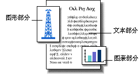

|
|
|
|
|
|
|
|
我能用 OpenDoc 做什么？
OpenDoc 是一项新的软件技术，可让您给文稿增加一个叫“部件”的软件组件。将一个部件拖入文稿，该部件即可被增加到文稿并附带有与该部件相关的工具或菜单命令。例如，将一个图形部件增加到文稿，您即可使用编辑图形的工具和命令。

有了 OpenDoc，您就可以建立一个结合了不同数据类型的文稿－包含文本、图形、声音、及视频，并可在文稿内编辑每一类型的数据。您不必在应用程序间来回切换。
您还可以混合和匹配所喜爱的软件功能。例如，您可在同一文稿内使用您喜爱的文本编辑器、绘图工具、及拼写检查器。
OpenDoc 是计算机领域的新技术，让您专注于所建立的东西（文稿），而非用来建立它们的工具（应用程序）。
要获得更多信息…
请参看 OpenDoc 屏幕辅助。（处理文稿时请查找“辅助”菜单。）
如果您已连接到 Internet，请参看 OpenDoc Web 节点 （http://www.opendoc.apple.com）。
主菜单| 返回
- © 1997 Apple Computer, Inc. All rights reserved.
- © 1997 苹果电脑国际有限公司，版权所有。